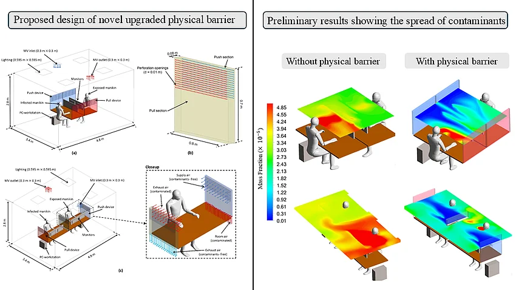

About
I am a postdoctoral researcher at the Chair of Building Physics at Bauhaus-Universität Weimar. I design ventilation systems that keep people safe from airborne contaminants and thermally comfortable indoors, while using as little energy as possible.
I received my Ph.D. in Mechanical Engineering from the American University of Beirut (AUB) in 2025. My dissertation developed novel ventilation systems for safety and comfort in indoor spaces, and assessed outdoor thermal discomfort across the Arab region. My work combines numerical simulation, laboratory experiments and human-subject studies, and spans classrooms, offices, homes and cities.
Research
Personalized ventilation
Delivering clean, conditioned air where occupants breathe, through desk push-pull devices, intermittent personalized jets and localized exhausts.
Airborne infection control
Limiting cross-contamination in classrooms and offices with air cleaners, upper-room UVGI and active physical barriers.
Thermal comfort & energy
Comfort in naturally ventilated and retrofitted buildings, and passive cooling with radiative panels and phase change materials in hot climates.
Urban climate & air quality
Historical outdoor thermal discomfort in the Eastern Mediterranean and Middle East, and PM2.5 hotspots from diesel generators in Beirut.
Current project

Can physical barriers effectively prevent infections when considering human movement?
Traditional desk partitions offer limited protection and do not adapt to how occupants move or breathe. This project develops an enhanced physical barrier with active components, such as localized exhaust fans, that capture and redirect airborne contaminants. The findings will inform evidence-based guidelines for indoor air safety in a post-pandemic world.
News
- Two papers on the desk push-pull system published in Energy and Buildings and Indoor Environments.
- Study of historical outdoor thermal discomfort in the Eastern Mediterranean and Middle East published in the International Journal of Climatology.
- Awarded a Thuringian postdoctoral fellowship for early-career women researchers.
- Joined the Chair of Building Physics at Bauhaus-Universität Weimar as a postdoctoral researcher.
- Received my Ph.D. in Mechanical Engineering from the American University of Beirut.
Publications
13 journal articles · 1 conference paper · 2 theses. Full list on Google Scholar.